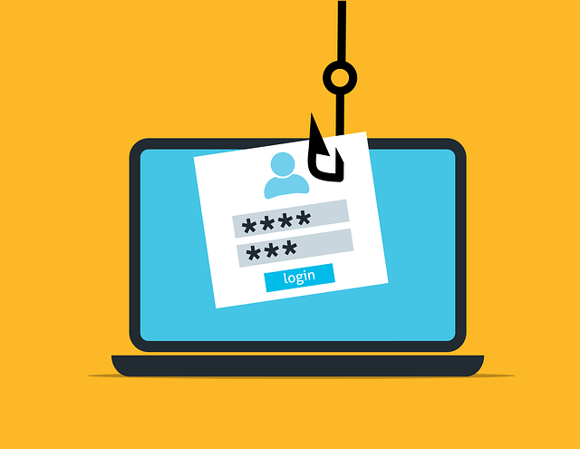
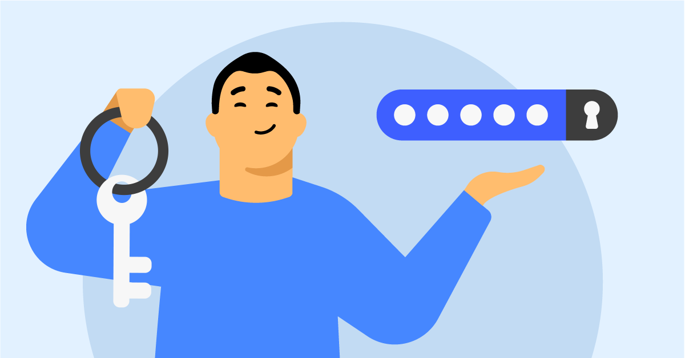
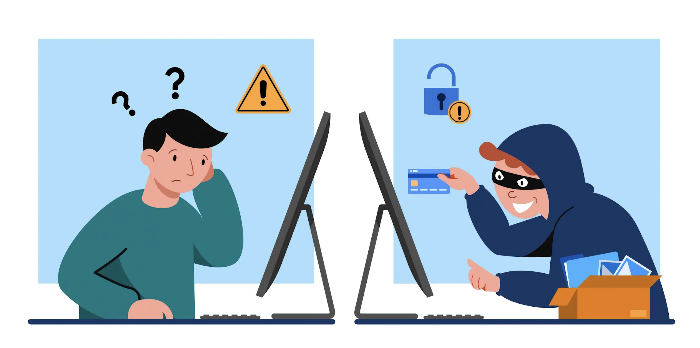
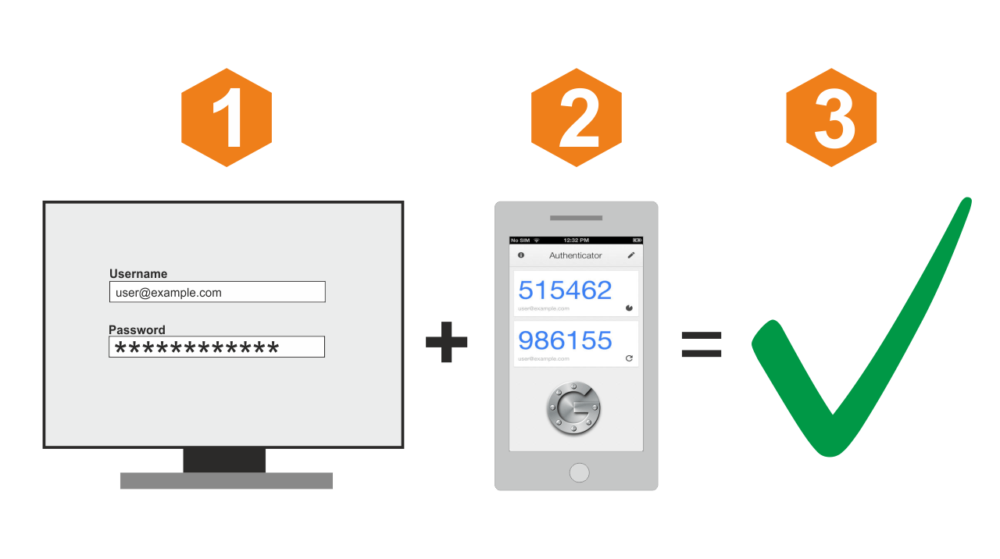
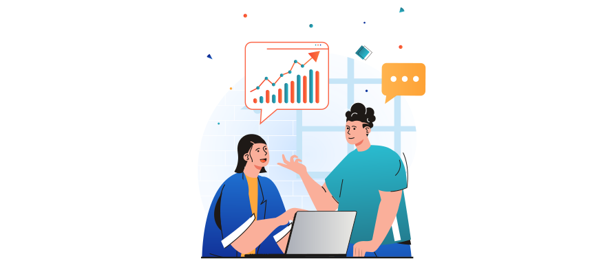

Celem tego modułu jest nauczenie uczestników, jak bezpiecznie przechowywać i chronić swoje dane osobowe w internecie. Uczestnicy zapoznają się z najlepszymi praktykami dotyczącymi zabezpieczania haseł, korzystania z menedżerów haseł, oraz wdrażania dodatkowych mechanizmów ochrony, takich jak dwustopniowa autoryzacja (2FA), w celu minimalizowania ryzyka kradzieży danych.
Zasady bezpiecznego przechowywania danych
Bezpieczne przechowywanie danych osobowych jest kluczowym elementem ochrony prywatności i zapobiegania kradzieży tożsamości. Dotyczy to zarówno danych przechowywanych lokalnie na urządzeniu, jak i tych przechowywanych w chmurze czy w różnych serwisach internetowych.
Zabezpieczanie haseł i loginów:
Hasła są jednym z głównych mechanizmów ochrony dostępu do konta online. Słabe hasła mogą zostać łatwo złamane przez atakujących, co stanowi poważne zagrożenie dla bezpieczeństwa danych osobowych. Z tego powodu należy stosować zasady tworzenia silnych, unikalnych haseł.

Zasady tworzenia silnych haseł:
Długość: Hasło powinno mieć co najmniej 12 znaków. Dłuższe hasła są trudniejsze do złamania.
Złożoność: Hasło powinno zawierać kombinację małych i dużych liter, cyfr oraz znaków specjalnych (np. !, @, #, $).
Unikalność: Nie używaj tego samego hasła do wielu kont. Każde konto powinno mieć unikalne hasło.
Jak tworzyć hasła w sposób bezpieczny?
Menedżer haseł: To narzędzie, które przechowuje i generuje silne, unikalne hasła dla różnych kont. Dzięki menedżerowi haseł nie musisz pamiętać wszystkich swoich haseł — wystarczy jedno silne hasło do menedżera. Dobre menedżery haseł szyfrują dane, zapewniając bezpieczeństwo.
Frazeski (Hasła passphrase): Inna metoda tworzenia silnych haseł to używanie fraz składających się z kilku słów, które są trudniejsze do odgadnięcia (np. „czerwonyPies7*2024!”). Dodatkowo takie frazy są łatwiejsze do zapamiętania.
Dobre praktyki przechowywania haseł:
Nie zapisuj haseł na kartkach papieru.
Unikaj zapisywania haseł w przeglądarkach internetowych, chyba że korzystasz z menedżera haseł.
Regularnie zmieniaj hasła, zwłaszcza do wrażliwych usług (np. bankowości internetowej).

Kradzież danych osobowych może prowadzić do poważnych konsekwencji, takich jak przejęcie konta bankowego, kradzież tożsamości, a także inne formy oszustw. Aby zabezpieczyć swoje dane przed kradzieżą, warto zastosować kilka dodatkowych warstw ochrony.

Sposoby zabezpieczania kont online:
Silne hasła: Jak już wspomniano, stosowanie silnych, unikalnych haseł do każdego konta jest podstawą.
Aktualizacje oprogramowania: Regularne aktualizowanie systemów operacyjnych, aplikacji i przeglądarek internetowych pomaga eliminować luki bezpieczeństwa, które mogą zostać wykorzystane przez cyberprzestępców.
Bezpieczne połączenie: Korzystaj z szyfrowanych połączeń, zwłaszcza przy logowaniu się do banków internetowych lub sklepów online. Zawsze sprawdzaj, czy adres strony zaczyna się od „https://” — litera „s” oznacza, że połączenie jest szyfrowane.
Korzystanie z dwustopniowej autoryzacji (2FA):
Dwustopniowa autoryzacja to mechanizm bezpieczeństwa, który zapewnia dodatkową warstwę ochrony w przypadku, gdy ktoś uzyska dostęp do Twojego hasła. 2FA wymaga, abyś po wprowadzeniu hasła, potwierdził swoją tożsamość za pomocą drugiego czynnika, np. jednorazowego kodu wysyłanego na telefon lub generowanego przez aplikację uwierzytelniającą (np. Google Authenticator).

Dlaczego warto korzystać z 2FA?
Bezpieczeństwo: Nawet jeśli ktoś przejmie Twoje hasło, nie będzie w stanie zalogować się na konto bez drugiego czynnika.
Dostępność: Większość ważnych serwisów (np. Google, Facebook, banki online) oferuje opcję włączenia 2FA.
Rodzaje 2FA:
SMS: Kod weryfikacyjny wysyłany na telefon. To metoda, choć powszechna, nieco mniej bezpieczna, ponieważ SMS-y mogą zostać przechwycone.
Aplikacja uwierzytelniająca: Aplikacje takie jak Google Authenticator lub Authy generują jednorazowe kody, które są bezpieczniejsze niż SMS.
Biometria: Użycie odcisku palca, rozpoznawania twarzy czy skanowania tęczówki oka to coraz bardziej popularne formy 2FA, szczególnie w telefonach i urządzeniach mobilnych.
Bezpieczne przechowywanie danych osobowych w internecie jest jednym z kluczowych aspektów ochrony prywatności i przeciwdziałania cyberprzestępczości. W dobie coraz bardziej zaawansowanych technologii i rozwijających się zagrożeń, konieczne jest świadome podejście do zarządzania swoimi danymi online.
Kluczowe zasady ochrony danych osobowych:
Silne i unikalne hasła: Hasła powinny być trudne do odgadnięcia, składać się z kombinacji wielkich i małych liter, cyfr oraz znaków specjalnych. Ważne jest, aby każde konto miało inne hasło – dzięki temu wyciek jednego z nich nie narazi innych kont na niebezpieczeństwo. Warto korzystać z menedżerów haseł, które pomagają zarządzać wieloma unikalnymi hasłami i przechowywać je w sposób bezpieczn
Dwustopniowa autoryzacja (2FA): Dodanie drugiej warstwy zabezpieczeń, na przykład w formie kodu SMS, aplikacji uwierzytelniającej lub klucza sprzętowego, znacząco utrudnia nieautoryzowany dostęp, nawet jeśli hasło zostanie przejęte.
Aktualizacje systemów i aplikacji: Regularne instalowanie aktualizacji jest kluczowe, ponieważ często zawierają one poprawki bezpieczeństwa, które eliminują luki wykorzystywane przez cyberprzestępców.
Ostrożność w udostępnianiu danych: Ważne jest, aby świadomie podchodzić do udostępniania swoich danych w internecie. Należy ograniczać ilość informacji publikowanych na portalach społecznościowych i zawsze weryfikować, komu je udostępniamy.
Bezpieczne korzystanie z sieci: Unikaj korzystania z publicznych sieci Wi-Fi do logowania się na konta zawierające wrażliwe dane, takie jak bankowość internetowa czy poczta e-mail. Jeśli musisz korzystać z publicznego Wi-Fi, używaj wirtualnej sieci prywatnej (VPN), która szyfruje połączenie i chroni przed podsłuchiwaniem.
Zachowanie czujności wobec oszustw: Phishing i inne formy manipulacji to najczęstsze metody wykorzystywane przez cyberprzestępców. Ważne jest, aby nie klikać w podejrzane linki, nie otwierać załączników od nieznanych nadawców i zawsze sprawdzać adresy stron internetowych, na których podajemy swoje dane.

Długofalowe korzyści:
Inwestowanie czasu i wysiłku w ochronę danych osobowych nie tylko minimalizuje ryzyko ich kradzieży, ale również daje poczucie kontroli i bezpieczeństwa w korzystaniu z internetu. Warto również regularnie edukować się w zakresie nowych zagrożeń i metod ochrony, aby dostosować swoje działania do zmieniającej się rzeczywistości cyfrowej.